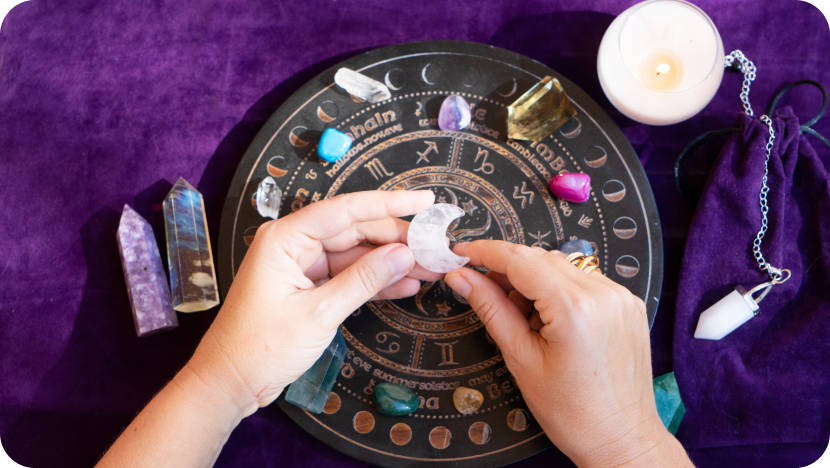
Астролог-консультант: ваш проводник в будущее
Я, магистр психологии с более чем 10-летним опытом изучения астрологии, предлагаю вам уникальные консультации, которые помогут заглянуть в будущее и избежать неприятностей в семье, на работе и в бизнесе.
Почему стоит выбрать меня?
- Опытные консультации в офлайн и онлайн форматах.Опытные консультации в офлайн и онлайн форматах. Вы можете встретиться со мной в моем кабинете на Цветном бульваре в Москве или заказать консультацию по скайпу, зуму или телефону, если живете в другом городе или стране.
- Гороскопы без профессиональных терминов.Я составляю гороскопы на понятном языке, чтобы вы могли максимально корректно получить важную информацию на основе полученных данных.
- Четкое понимание будущего.Вы получите четкое понимание, в каком направлении двигаться дальше, и поймете, что ожидает вас в будущем. Это знание даст уверенность в себе, избавит от ненужных страхов и позволит радоваться каждому мгновению жизни.
- Уважение к вашим границам.Я не берусь за задачи, выходящие за рамки моей компетентности, и всегда честен с клиентами. Если я не могу решить вашу проблему, я объясню, почему, и предложу альтернативные варианты решения.
- Постоянное развитие.Я слежу за новыми тенденциями и технологиями в астрологии, чтобы быть в курсе последних достижений и не потерять свою компетентность.
- Открытость к обучению.Даже если я считаю себя компетентным, всегда есть возможность узнать что-то новое и улучшить свои навыки.
- Индивидуальный подход.Я максимально корректно дам важную информацию на основе полученных данных, учитывая ваши интересы и потребности.
Не упустите возможность заглянуть в будущее и получить ценные знания! Запишитесь на консультацию уже сегодня!
Partner
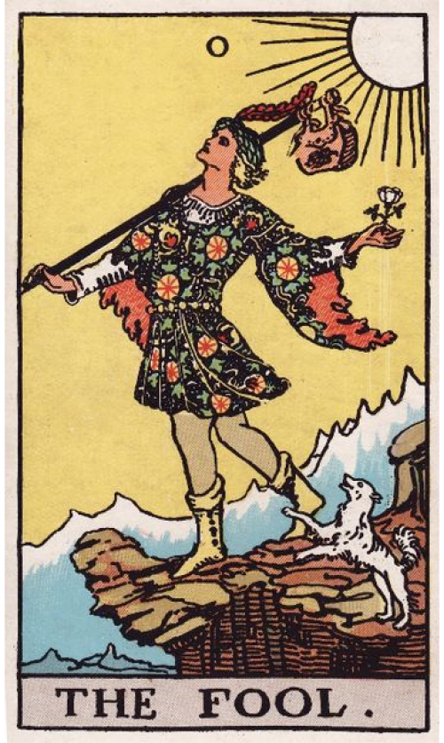
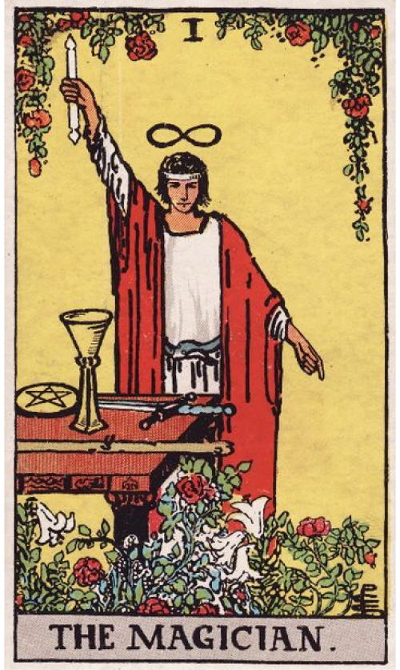
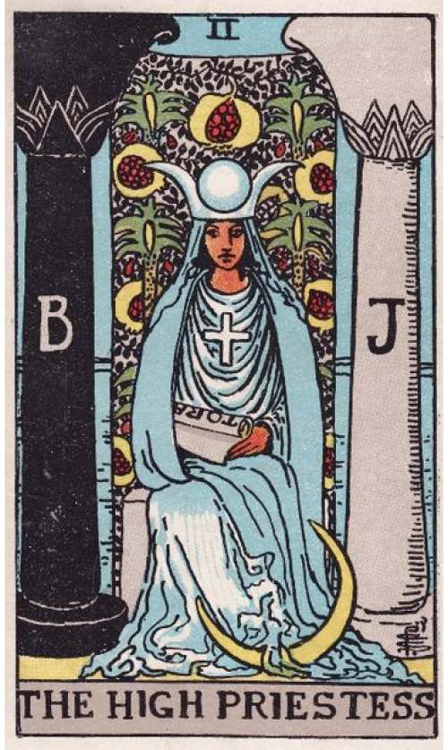
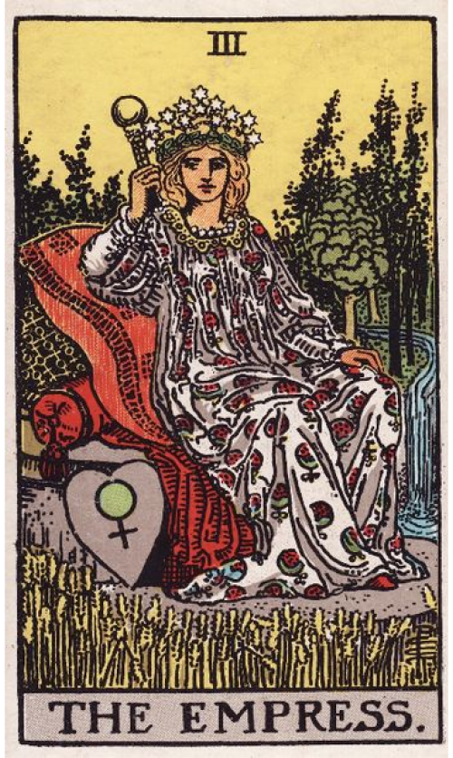
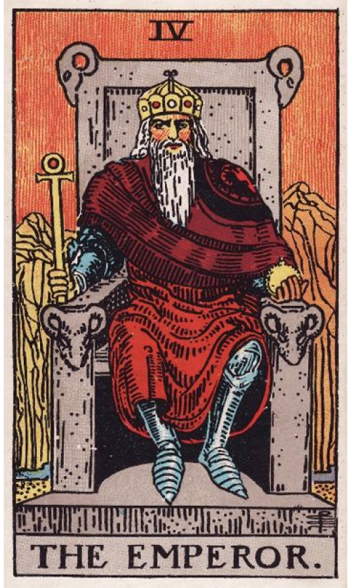
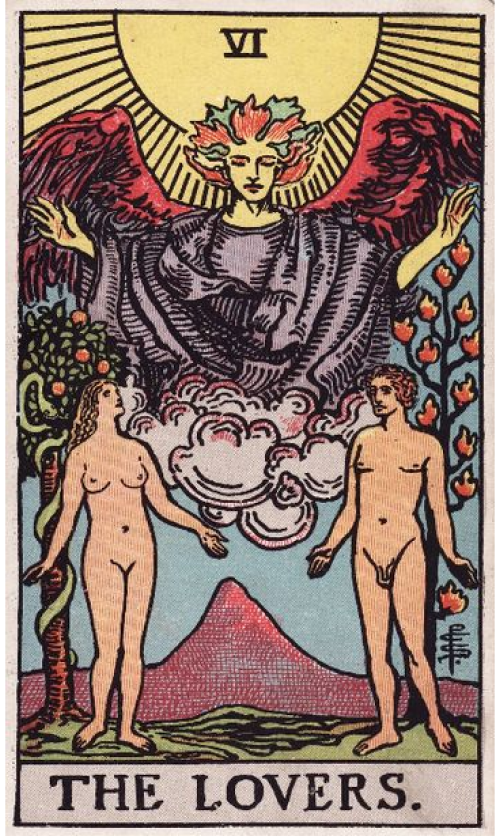
Partner
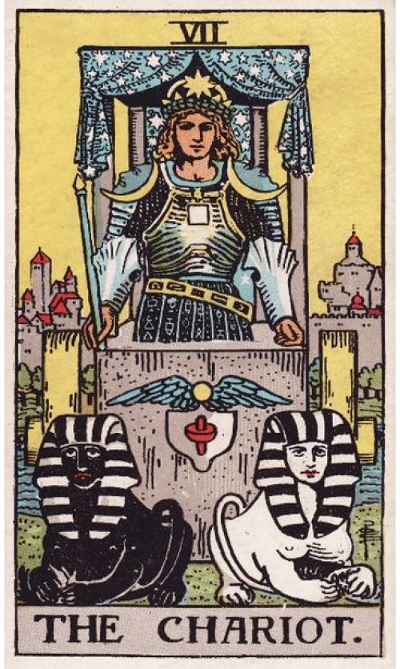
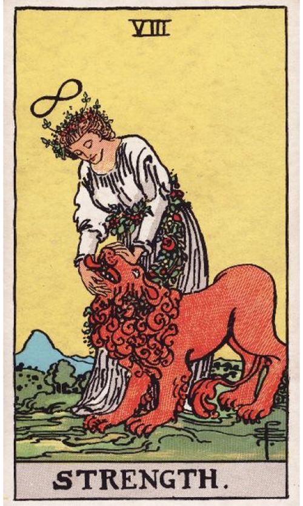
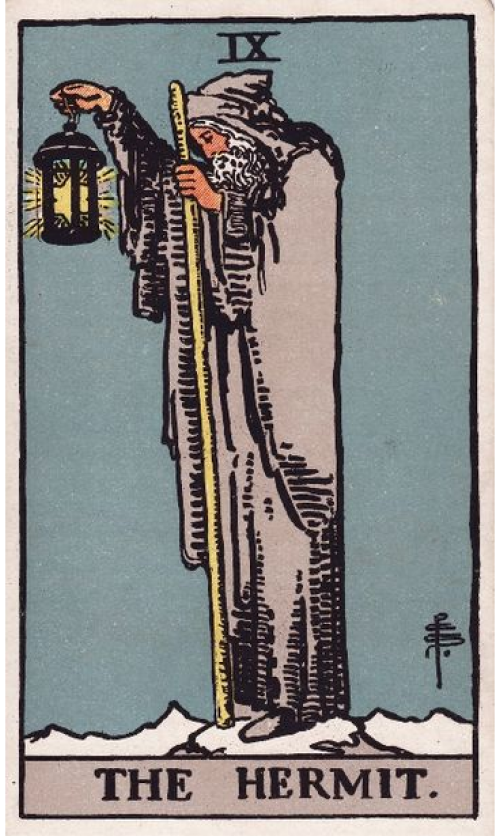
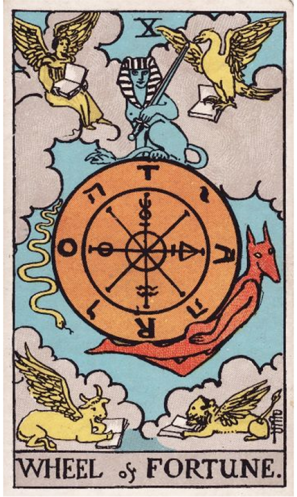
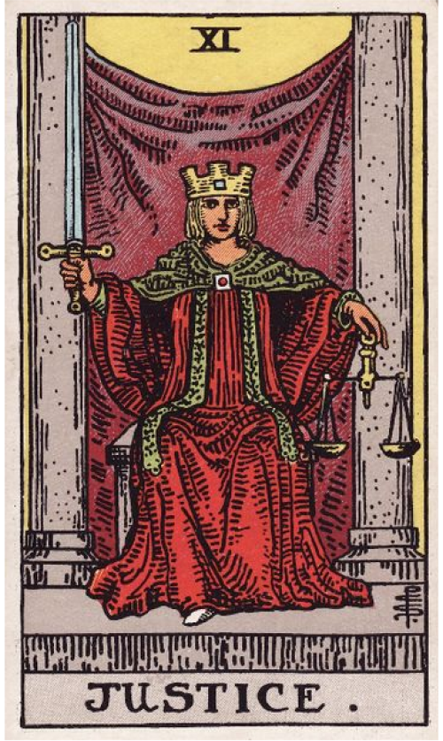
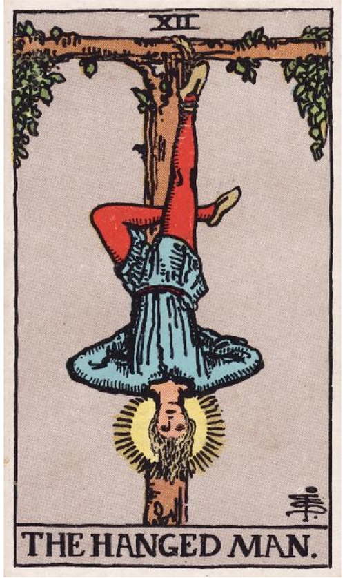
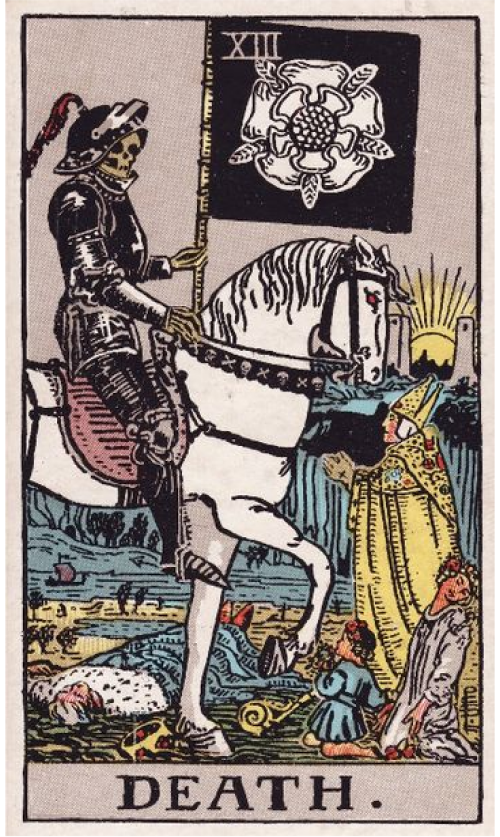
Partner
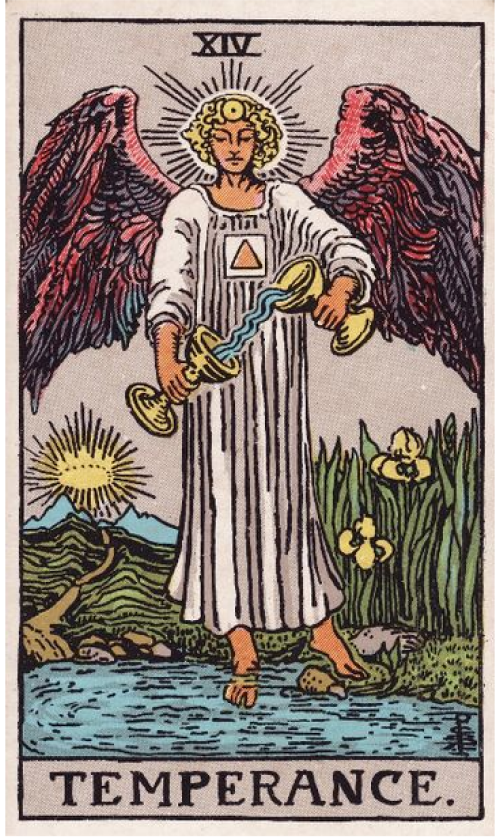
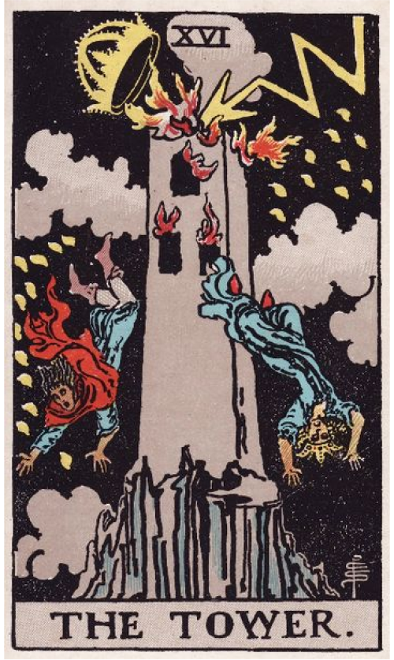
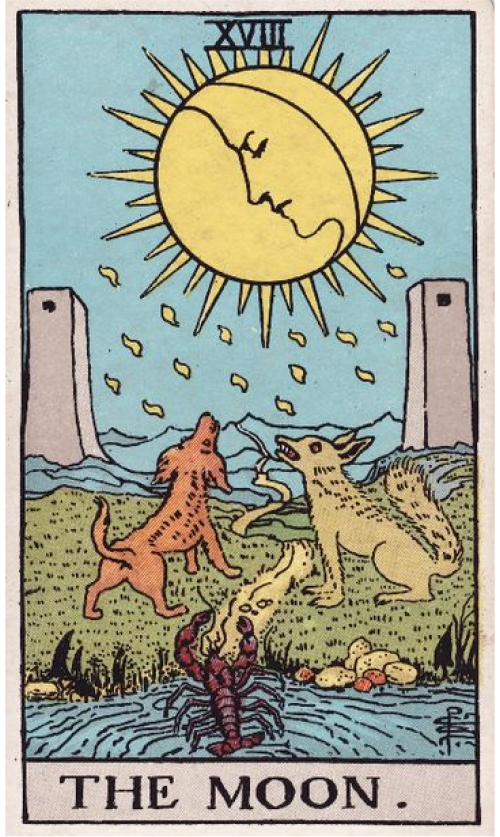
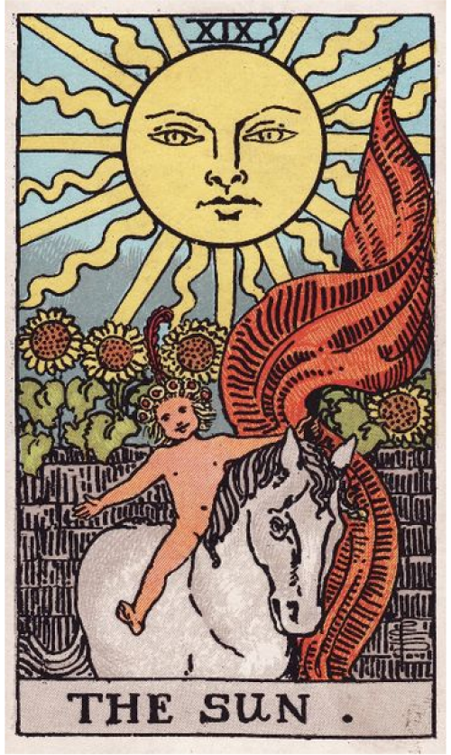
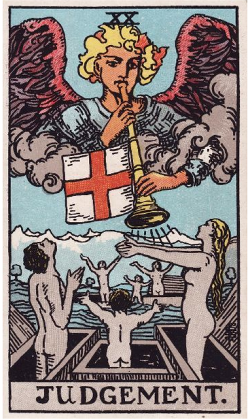
Мои принципы работы
Конфиденциальность
Я понимаю, что информация, полученная мной в ходе консультации, является конфиденциальной и не подлежит разглашению третьим лицам.
Ответственность
Я осознаю всю полноту своей профессиональной и личной ответственности перед обратившимся ко мне.
Этическая правомочность
Существуют темы, обсуждение которых не допускается по причинам этического характера. К таким темам относятся вопросы, касающиеся смерти, а также некоторые медицинские аспекты.
Компетентность
Чётко определяю и учитываю границы своей компетентности, берусь только за те вопросы, которые могу решить.
Профессиональная кооперация
Проявляю уважение к другим специалистам и воздерживаюсь от оценки их методов работы.
Благополучие обратившегося
Основные усилия должны быть направлены на обеспечение прав и благополучия клиента, что является первоочередной задачей.
Выберите Услугу
все услугиЭтапы работы
Ваш прогноз в 5 шагов
Наша работа будет включать несколько ключевых этапов, каждый из которых важен для достижения наилучшего результата. Вот примерный план взаимодействия:
-
шаг 1вы обратились
Первичная консультация
На этом этапе астролог знакомится с клиентом, выясняет его цели и ожидания от консультации. Клиент рассказывает о своих проблемах, вопросах или темах, которые хотел бы обсудить. Астролог уточняет информацию, необходимую для составления натальной карты клиента, включая дату, время и место рождения.
-
шаг 2Подготовили информацию
Анализ натальной карты
После получения данных астролог составляет натальную карту клиента. Этот этап включает детальный анализ планетных позиций, аспектов между ними, домов гороскопа и других элементов карты. Анализ помогает выявить сильные и слабые стороны личности, потенциал развития, возможные препятствия и пути их преодоления.
-
шаг 3Озвучили проблему
Интерпретация результатов
Астролог объясняет клиенту результаты анализа натальной карты. Он описывает влияние различных планет и аспектов на жизнь клиента, дает рекомендации по использованию сильных сторон и работе над слабыми местами. Важно, чтобы клиент понимал значение каждого элемента своей карты и мог применить эту информацию в жизни.
-
шаг 4приняли участие в консультации
Прогноз событий
В зависимости от целей консультации, астролог может составить прогноз на будущее. Это может включать предсказание важных жизненных событий, таких как изменения в карьере, отношениях, здоровье и другие аспекты жизни. Прогноз основывается на текущих планетарных позициях и аспектах, а также на транзите планет через дома гороскопа..
-
шаг 5получили рекомендации
Рекомендации и поддержка
Завершающий этап работы астролога – предоставление рекомендаций и советов клиенту. Эти рекомендации могут касаться различных сфер жизни, таких как карьера, отношения, здоровье, духовное развитие и многое другое. Астролог помогает клиенту понять, какие шаги нужно предпринять для достижения поставленных целей и улучшения качества жизни.